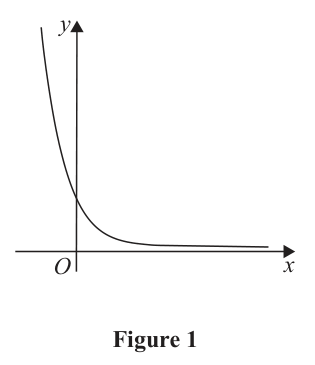
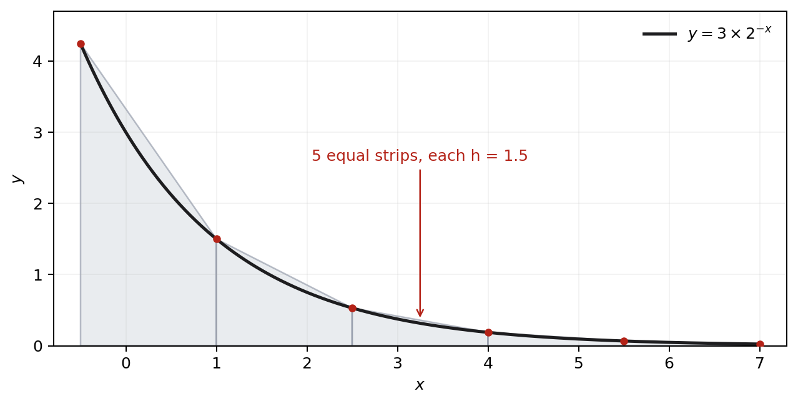

Source/status: Pearson WMA12/01, 15 October 2025, Q3. Part (a) was original correct. Part (b) was partial: six ordinates were counted as six strips; the live correction used five gaps.
Instruction: In this question you must show all stages of your working. Solutions relying entirely on calculator technology are not acceptable.
Figure 1 shows a sketch of the curve with equation $y=3\times2^{-x}$.

The point $P(k,300000)$ lies on the curve.(a) Use logarithms to find the value of $k$ to 2 decimal places. (2)
$x$ $-0.5$ $1$ $2.5$ $4.0$ $5.5$ $7$ $y$ $4.243$ $1.5$ $0.530$ $0.188$ $0.066$ $0.023$ The table shows corresponding values of $x$ and $y$ for $y=3\times2^{-x}$. The values of $y$ are given to 3 decimal places where appropriate.
(b)(i) Use the trapezium rule, with all the values of $y$ from the table, to find an approximate value, to 2 decimal places, for $$\int_{-0.5}^7 3\times2^{-x}\,dx.\quad(3)$$
(b)(ii) Use your answer to part (b)(i) to estimate $$\int_{-0.5}^7 2^{-x}\,dx+\int_{-7}^{0.5}2^x\,dx.\quad(2)$$
[7 marks]
Strategy and why it applies. Substitute the coordinates of $P$ into the exponential model, isolate the power of 2, and then use logarithms because the unknown is in the exponent. The instruction explicitly requires logarithms, so a calculator-only numerical solve would not demonstrate the demanded method even if it produced the correct decimal.
Formula / definition first. If $a^u=b$ with $a>0$, $a\ne1$ and $b>0$, then $u=\log b/\log a$. Here $300000=3\times2^{-k}$, so $2^{-k}=100000$. Taking logs gives $-k\log2=\log100000$.
Complete working. Rearrange: $$k=-\frac{\log100000}{\log2}.$$ Since $\log100000=5$ for base 10, $k\approx-16.6096$, hence $\boxed{k=-16.61}$ to two decimal places. Any common logarithm base gives the same ratio when used consistently.
Difficult transition. The difficult transition is the negative exponent. Solving for $-k$ first gives $-k=\log100000/\log2>0$, so $k$ must be negative. Dropping that sign would put the point far along a decaying curve where $y$ is tiny, contradicting $y=300000$.
What went wrong / common trap. The lesson status is original correct; no unsupported personal error should be invented. A neutral common trap is writing $k=\log100000/\log2$ without the minus, or taking logarithms before isolating $2^{-k}$ and then distributing them incorrectly across a sum. Here multiplication by 3 becomes subtraction only after applying log laws correctly.
Sense check and verification. Check back qualitatively and numerically. Negative $x$ makes $2^{-x}$ large, so a very large ordinate requires negative $k$. Using $k\approx-16.61$ gives $-k\approx16.61$ and $3\times2^{16.61}\approx300000$. The sign and scale both agree with the source graph.
Exam trigger and transfer. When the unknown appears in an exponent, isolate the exponential term, state the log rule, preserve any sign attached to the exponent, and substitute back for a scale check. If the paper says 'use logarithms', show the log equation explicitly rather than presenting only a calculator value.
Strategy and why it applies. Count intervals between consecutive ordinates before applying the trapezium rule. Six tabulated $y$-values create five strips, each spanning the equal change in $x$. Then place the two endpoint ordinates once and every interior ordinate twice. This directly repairs the recorded strip-counting error while preserving the otherwise valid method.
Formula / definition first. For $n$ equal strips of width $h=(b-a)/n$, the trapezium rule is $\dfrac h2[y_0+y_n+2(y_1+\cdots+y_{n-1})]$. Here $a=-0.5$, $b=7$, and $n=5$, so $h=[7-(-0.5)]/5=1.5$.
Complete working. Substitute all source values: $$\frac{1.5}{2}\{4.243+0.023+2(1.5+0.530+0.188+0.066)\}.$$ The interior sum is $2.284$, doubled to $4.568$; the endpoints total $4.266$. Thus the bracket is $8.834$, and $0.75(8.834)=6.6255$, giving $\boxed{6.63}$ to two decimal places.
Difficult transition. The difficult transition is ordinates to strips. The six positions $-0.5,1,2.5,4,5.5,7$ contain five gaps, each of width $1.5$. Setting $n=6$ would produce an incorrect width $1.25$ and would no longer match the actual table spacing. Counting gaps makes the geometry of the rule visible.
What went wrong / common trap. The recorded attempt counted six values as six trapezia; the tutor noted that this one slip propagated across part (b). The common trap is understandable because both $n$ and $n+1$ appear in trapezium contexts. The repair phrase is exact and reusable: count the gaps, not the ordinates; $n$ strips require $n+1$ values.
Sense check and verification. Verify every datum is used once in the correct role: $4.243$ and $0.023$ are endpoints; the four middle values are doubled. The estimate $6.6255$ is larger than a single average-height strip and positive, as the graph requires. Keep the unrounded $6.6255$ for part (b)(ii), even though the displayed answer is $6.63$.
Exam trigger and transfer. Recognition trigger: when a table supplies equally spaced ordinates, mark the gaps, compute $h$ from adjacent $x$-values or $(b-a)/n$, bracket endpoints once and interiors twice. Write the unrounded estimate in a carry-in for any follow-through part and round only where the command requests.
Strategy and why it applies. Relate both requested integrals to the integral already estimated rather than launching two new numerical integrations. One integrand differs by the constant factor 3; the other becomes the same $2^{-u}$ form after a sign-changing substitution. The command 'use your answer' signals exactly this scaling and symmetry route.
Formula / definition first. Let $I=\int_{-0.5}^{7}3\times2^{-x}\,dx\approx6.6255$. Then $\int_{-0.5}^{7}2^{-x}\,dx=I/3$. For $\int_{-7}^{0.5}2^x\,dx$, put $u=-x$, so $dx=-du$ and the bounds $x=-7,0.5$ become $u=7,-0.5$.
Complete working. Changing bounds gives $$\int_{-7}^{0.5}2^x\,dx=\int_{7}^{-0.5}2^{-u}(-du)=\int_{-0.5}^{7}2^{-u}\,du=\frac I3.$$ Therefore the requested sum is $2I/3=2(6.6255)/3=4.417$, hence $\boxed{4.42}$ to two decimal places.
Difficult transition. The difficult transition is managing both the negative differential and the reversed bounds. Either retain the minus and reverse the bounds, or change bounds carefully as shown; doing both twice would restore the wrong sign. The transformed interval exactly matches $[-0.5,7]$, which is why the original estimate can be reused.
What went wrong / common trap. The original follow-through idea was correct but inherited the wrong part (i) estimate. A common trap is to substitute the rounded $6.63$ too early, or to treat the second integral as unrelated because its exponent is $+x$. The substitution reveals that it is the same area in reflected coordinates.
Sense check and verification. Check the scaling: the original $I$ includes a factor 3, so each unscaled integral is one third of it; there are two equal integrals, so the total must be two thirds of $I$, smaller than $6.6255$. The result $4.417$ satisfies that exact ratio and rounds to $4.42$.
Exam trigger and transfer. When a follow-through integral changes coefficient, sign in the exponent, or mirrored bounds, search for constant scaling and $u=-x$ before recalculating. Carry the unrounded previous estimate, show transformed bounds, and state the final requested accuracy only at the end.

>